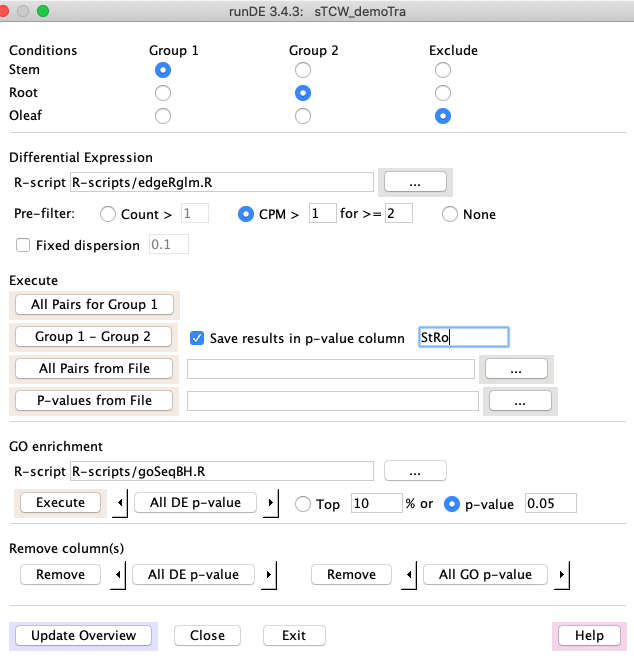

TCW provides two sets of programs: singleTCW for annotating and viewing
single species transcriptions, and multiTCW for
annotating and viewing comparative transcripts.
Contents:
Programs
singleTCW contains four major programs:
1. runAS -- annotation setup for input to runSingleTCW
- Downloads the UniProt taxonomic and/or full SwissProt and TrEMBL .dat files
- Create fasta files from .dat files for searching against TCW sequences
- Download the GO mysql database and augment it with UniProt information about GO, KEGG, Pfam, and InterPro
Note: runSingleTCW can take as input other databases such as Genbank nr,
but these results will not have associated GO annotations.
| 
|
2. runSingleTCW -- builds a single-species TCW database (sTCWdb)
- Input: sequences and optional counts, where any of the following are valid (
the first three are NT-sTCWdbs and the last is a AA-sTCWdb):
- Load RNA-seq transcripts and count data with optional replicates.
- Load sequences with location information (e.g. predicted genes).
- Assemble up to ~1M sequences, such as: transcript sets,
paired-end Sanger ESTs, or a mix of transcripts and ESTs.
- Load protein sequences and spectra (count) data with optional replicates.
- Annotation:
- Annotate sequences with one or more nucleotide or protein databases (called annoDBs).
UniProt should be downloaded with the runAS program. The searching may be done with
the super-fast
DIAMOND or the standard BLAST.
- If UniProt is used, GO annotations along with EC, KEGG and Pfam identifiers are extracted
from the GO database and entered into the sTCWdb (The GO database is set up with the runAS).
- Compute ORFS and GC content.
- All data and results are stored in a MySQL database.
| 
|
3. runDE -- run Differential Expression analysis
- An interface to several R packages (EdgeR, DESeq) for calculating differential
of sequences. Additionally, it can execute a user-provided R script for DE calculation.
- If the sTCWdb contains GOs, the GOseq R program can be used to compute differential GO terms.
| 
|
4. viewSingleTCW -- view a single-species TCW database
- Query and view the results. There are various filters, for example,
filters are provided specific to taxonomic databases, trimmed GOs, filter by annotation, etc.
The initial view is the Overview, which summarizes the results.
| 
|
multiTCW contains two major programs:
1. runMultiTCW -- builds a multi-species comparison TCW database (mTCWdb)
- Builds a database from multiple sTCWdbs, which can be NT-sTCWdbs, AA-sTCWdbs
or a mix. This has been tested with up to 5 input sTCWdbs.
- Runs DIAMOND or BLAST to compare the sequences from the input TCWs. Add the resulting pairs to the database.
- Clusters the pairs into ortholog groups. They can be clustered with
TCW Closure, TCW BBH (best bi-directional), TCW shared hit, OrthoMCL, and/or user-supplied clusters can be uploaded.
Multiple ortholog clustering can be in the database for query.
- If the input is from two or more NT-sTCWdbs, coding statistics are calculated. Additionally,
alignment files are output for input to KaKs_calculator, and the results of running
the KaKs_calculator are input to runMultiTCW.
- MSA (multiple sequence alignments) are computed for each cluster and scored with Trident.
| 
|
2. viewMultiTCW -- view a multi-species TCW database
- Query and view the results. The results can be filtered on various attributes. A cluster
can be viewed graphically with the results of MAFFT or MUSCLE
MSA or pairwise alignment
(e.g. see graphical views MSA and Pair, respectively).
| 
|
| OS | Architecture | Purchased | Database | Java | Test
|
|---|
| Linux x86.64 (Centos 7) | 3.2 Ghz AMD 24-Core, 128Gb | 2011 | MariaDB v10.4.12 | v1.8 | Build and View
|
| Linux x86.64 (Centos 7) | 2.0 Ghz AMD 4-Core, 20Gb | 2008 | MariaDB v5.5.60 | v1.7 | View
|
| MacOS (Catalina 10.15.4) | 3.2 GHz Intel 6-Core i7, 64Gb | 2020 | MySQL v8.0.17 | v14.0 | Build and View
|
| MacOS (Maverick 10.9.5) | 2.4 Ghz Intel 2-Core i5, 16Gb | 2012 | MySQL v5.6.21 | v1.7 | View
|
singleTCW
The timings were run on the MacOS (row #3) and Linux (row #1) of the above machine table.
The "Mb" numbers are maximum memory (when available), and are approximate.
| Task | Count | Mac Mini | Linux
|
|---|
| Load | 64,930 seqs
| 1m:26s
| 20Mb
| 2m:17s
| 19Mb
|
| Instantiate | 64,930 seqs
| 47s
| 4Mb
| 1m:16s
| 1Mb
|
| Diamond1 | 5G-6G file size
| 12m:09s
| ---
| 11m:54s
| ---
|
| Annotate2 | 461,118 unique hits
| 18m:14s
| 2374Mb
| 56m:7s
| 2384Mb
|
| ORF | 64,930 ORFs
| 3m:54s
| 150Mb
| 9m:36s
| 246Mb
|
| GO | 10,724 GOs
| 28m:42s
| 1030Mb
| 52m:04s
| 1350Mb
|
1TR-plants; The May2020 file (5G) was used on Mac,
and the Oct2020 file (6G) was used on Linux, which influenced the increased times on Linux.
2SP-plants, TR-plants, SP-full; times do not include Diamond. Linux had 462,883 unique hits.
multiTCW
Using the same two computers as above, the mTCW database was built from a dataset of
28,392 and another of 26,685 sequences. Both datasets were annotated with SP-plants, TR-plants, and SP-full,
where the Mac versions were downloaded May2020 and the Linux on Oct2020.
| Task | Count | Mac Mini | Linux
|
|---|
| Build Database | 55,077 seq and 595,698 unique hits1
| 6m:28s
| 150Mb
| 9m:31s
| 152Mb
|
| GO | 21,693 GOs
| 16m:48s
| 11Mb
| 30m:26s
| 506Mb
|
| Add Pairs with Hits | 392,919 AA and 43,485 NT pairs
| 5m:03s
| 61Mb
| 15m:54s
| 68Mb
|
| Add 3 cluster sets2 | 22,376 total clusters
| 2m:56s
| 33Mb
| 8m:10s
| 31Mb
|
| Run Stats
|
| PCC | 410,401 Pairs
| 1m:32s
| 68Mb
| 2m:16s
| 63Mb
|
| Pair Stats | 95,628 Pairs to align
| 44m:33s
| 624Mb
| 2h:5m:19s
| 661Mb
|
| MSA3 Stats | 22,376 clusters
| 1h:20m:11s
| ---
| 4h:34m:23s
| ---
|
1The Linux database had 606,845 unique hits.
2The methods added were BBH, Closure and BestHit. Closure used the most memory.
3This step uses the external program MAFFT.
The Linux times are much slower than the Mac, even though they comparable architectures; the Linux
may not be optimized well and is a much older machine. It is important with MariaDB to make sure
the variables are set right; execute
./runSingleTCW -v
to print out some variables that seem to effect performance with MariaDB on Linux.
Linux only for TCW v3.0
The following are from the supplement 1 of Soderlund (2019). The singleTCW was 26,856 sequences.
The UniProts were five SwissProt, the full SwissProt and five TrEMBL databases (but not the full).
The multiTCW was created from three sTCWdbs for a total of 198,702 sequences.
There is not much speed difference between
TCW v3 and later versions.
| Program | Step | Time | Note
|
|---|
| runAS | Download and create UniProt FASTA files | 5h:33m:24s | a
|
| | Download SwissProt and create subset FASTA file | 4m:34s | a
|
| | Download and build GO database | 8h:59m:55s | b
|
| runSingleTCW | Build sTCW_rhi_NnR of 26,685 transcripts | 3m:13s |
|
| | Annotate sequences | 2h:15m:22s | c
|
| | ORF-finding | 6m:09s |
|
| | Add GO annotations | 50m:26s |
|
| runDE | edgeR for 12 condition pairs | 0m:20s | d
|
| | GOseq for each of the 12 DE results | 10m:56s | d
|
| runMultiTCW | Build mTCW_rhi of 198,702 transcripts | 20m:56s |
|
| | Add GO annotation for 23,516 unique GOs | 56m:02s |
|
| | Add 1,099,986 pairs after searching | 28m:20s | e
|
| | Build Clusters (total) | 22m:00s | f
|
| | BBH (OlR-Os) | :04s |
|
| | Closure | :08s |
|
| | OrthoMCL | 8m:04s |
|
| | Compute PCC for 1,099,986 pairs | 3m:37s |
|
| | Pair-align and analyze 354,280 pairs | 2h:27m:08s |
|
| | Multi-align and analyze 71,339 clusters | 12h:14m:43s | g
|
| | Add KaKs values | 1m:1s | h
|
a There can be considerable variation in download times.
b The bulk of the time was from loading uniprot_trembl_bacterial.dat.gz, which took 6h:56m:58s; the compressed file was 57G and contained 96,592,456 entries.
c This did not include the DIAMOND formatting but did include the time for searching; the longest time for searching was against TrEMBL bacterial, which took 35m:20s.
d The time for executing the R code and loading the results.
e The time does not include searching all sequences against themselves. The protein self-comparison took DIAMOND 3m22s and nucleotides self-search took Blastn 5m:13s.
f The time for computing and adding all clusters; the majority of the time was for loading the clusters into the database. The following three individual cluster times are only for computing the clusters.
g This includes the time to run MAFFT in parallel on each cluster.
h This does not include the time to execute the KaKs_Calculator, which is run by the user before the add.
C. Soderlund (2019) Transcriptome computational workbench (TCW):
analysis of single and comparative transcriptomes.
BioRxiv
Describes the TCW v3 package.
C. Soderlund, W. Nelson and S. Goff (2014)
Allele Workbench: transcriptome pipeline and interactive graphics for allele-specific expression.
PLOS ONE
Describes a pipeline that can be used with TCW, plus a new GO trim algorithm.
C. Soderlund, W. Nelson, M. Willer and D. Gang (2013) TCW: Transcriptome Computational Workbench.
PLOS ONE
Describes the TCW v1 package.
C. Soderlund, E. Johnson, M. Bomhoff, and A. Descour (2009)
PAVE: Program for Assembling and Viewing ESTs.
BMC Genomics
Describes the assembly algorithm.
{kind=link}
{kind=link}